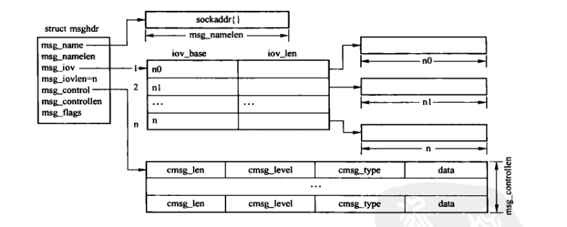
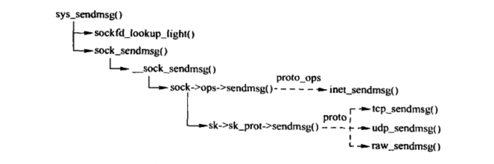
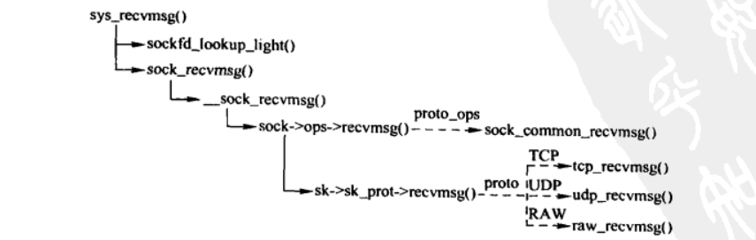

套接口 I/O
Table of Contents
1. 输入/输出数据的组织
1.1. msghdr结构
虽然通过发送接口或接收接口可以直接指定数据的地址，但是最终还会将数据组合成 msghdr 结构进行处理。

Figure 1: msghdr结构
/* * As we do 4.4BSD message passing we use a 4.4BSD message passing * system, not 4.3. Thus msg_accrights(len) are now missing. They * belong in an obscure libc emulation or the bin. */ struct msghdr { void *msg_name; /* 指向sock_addr结构的目的地址的指针 */ int msg_namelen; /* 目的地址的缓存区大小 */ struct iovec *msg_iov; /* 带发送或者接收的缓存区的数组指针，*/ __kernel_size_t msg_iovlen; /* 缓存区的数组大小 */ void *msg_control; /* 控制信息，通常是指向cmsghdr结构的数组 */ __kernel_size_t msg_controllen; /* 控制信息的长度 */ unsigned msg_flags; /* 接收标志 */ }; //iovec结构用于描述输入/输出缓存区 struct iovec { void __user *iov_base; /* 数据缓存区的指针*/ __kernel_size_t iov_len; /* 缓存区长度 */ }; struct cmsghdr { __kernel_size_t cmsg_len; /* 控制消息的数据长度，其中包含cmsghdr结构的长度 */ int cmsg_level; /* 控制信息的级别 （SOL_SOCKET SOL_IP等） */ int cmsg_type; /* 控制信息的类型 （IP_RETOPTS IP_TTL等） */ };
| msg_flags | 描述 |
|---|---|
| MSG_OOB | 接收或发送带外数据 |
| MSG_PEEK | 查看数据，并不从系统缓存移走数据 |
| MSG_DONTROUTE | 无须路由查找，目的地位于本地子网 |
| MSG_CTRUNC | 指明由于缓存区空间不足，一些控制数据已被丢弃 |
| MSG_PROBE | 此标识表示不会进行真正的数据传递，而是路径MTU的探测 |
| MSG_TRUNC | 返回包的真实长度，并截断数据 |
| MSG_DONTWAIT | 无阻塞接收或发送。 |
| MSG_WAITALL | 必须一直等待，直到接收到的数据填满用户空间的缓存区 |
| MSG_CONFIRM | 标识网关有效。 |
| MSG_ERRQUEUE | 只是除了来自套接字错误队列的错误外，不接收其他数据 |
| MSG_NOSIGNAL | 当另一端终止连接时，请求在基于流的错误套接字上不要发送SIGPIPE信号 |
| MSG_MORE | 后续还有数据待发送 |
1.2. verify_iovec()
内核态使用该函数校验用户态提供的msghdr结构进行校验。
/* * Verify iovec. The caller must ensure that the iovec is big enough * to hold the message iovec. * * Save time not doing access_ok. copy_*_user will make this work * in any case. */ int verify_iovec(struct msghdr *m, struct iovec *iov, char *address, int mode) { int size, err, ct; if (m->msg_namelen) {//存放地址信息的缓存区长度有效，则设置存放地址信息的缓存区 if (mode == VERIFY_READ) { err = move_addr_to_kernel(m->msg_name, m->msg_namelen, address); if (err < 0) return err; } m->msg_name = address; } else { m->msg_name = NULL; } size = m->msg_iovlen * sizeof(struct iovec); if (copy_from_user(iov, m->msg_iov, size)) //从用户空间复制缓存区数据 return -EFAULT; m->msg_iov = iov; err = 0; for (ct = 0; ct < m->msg_iovlen; ct++) { err += iov[ct].iov_len; /* * Goal is not to verify user data, but to prevent returning * negative value, which is interpreted as errno. * Overflow is still possible, but it is harmless. */ if (err < 0) return -EMSGSIZE; } return err; }
1.3. memcpy_toiovec()
将内核空间中的数据复制到用户空间的iovec结构向量描述的缓存区。
1.4. memcpy_fromiovec()
将用户空间的iovec结构向量描述的缓存区的数据复制到内核空间。
1.5. memcpy_fromiovecend()
将用户空间的iovec结构向量描述的缓存区中的数据从offset偏移处复制到内核空间。
1.6. csum_partial_copy_fromiovecend()
将用户空间的iovec结构向量描述的缓存区的数据从offset偏移处复制到内核空间中，且支持对复制的数据计算校验和，并累加到原先的校验和。
2. 输出系统调用
2.1. sock_sendmsg()
该函数最终会通过 proto_ops 结构跳转到各个传输层各自的实现。
2.2. sendto
该函数将数据发送到指定的目的地址。
/* * Send a datagram to a given address. We move the address into kernel * space and check the user space data area is readable before invoking * the protocol. */ asmlinkage long sys_sendto(int fd, void __user *buff, size_t len, unsigned flags, struct sockaddr __user *addr, int addr_len) { struct socket *sock; char address[MAX_SOCK_ADDR]; int err; struct msghdr msg; struct iovec iov; int fput_needed; struct file *sock_file; sock_file = fget_light(fd, &fput_needed); //获取套接口文件 if (!sock_file) return -EBADF; sock = sock_from_file(sock_file, &err); //获取套接口 if (!sock) goto out_put; //组织消息头 iov.iov_base = buff; iov.iov_len = len; msg.msg_name = NULL; msg.msg_iov = &iov; msg.msg_iovlen = 1; msg.msg_control = NULL; msg.msg_controllen = 0; msg.msg_namelen = 0; if (addr) { //指定了目的地址，则复制到消息中 err = move_addr_to_kernel(addr, addr_len, address); if (err < 0) goto out_put; msg.msg_name = address; msg.msg_namelen = addr_len; } if (sock->file->f_flags & O_NONBLOCK) //设置了非阻塞 flags |= MSG_DONTWAIT; msg.msg_flags = flags; err = sock_sendmsg(sock, &msg, len); //发送数据 out_put: fput_light(sock_file, fput_needed); return err; }
2.3. send
asmlinkage long sys_send(int fd, void __user *buff, size_t len, unsigned flags) { return sys_sendto(fd, buff, len, flags, NULL, 0); }
2.4. sendmsg

Figure 2: sendmsg系统调用
asmlinkage long sys_sendmsg(int fd, struct msghdr __user *msg, unsigned flags) { struct compat_msghdr __user *msg_compat = (struct compat_msghdr __user *)msg; struct socket *sock; char address[MAX_SOCK_ADDR]; struct iovec iovstack[UIO_FASTIOV], *iov = iovstack; unsigned char ctl[sizeof(struct cmsghdr) + 20] __attribute__ ((aligned(sizeof(__kernel_size_t)))); /* 20 is size of ipv6_pktinfo */ unsigned char *ctl_buf = ctl; struct msghdr msg_sys; int err, ctl_len, iov_size, total_len; int fput_needed; err = -EFAULT; if (MSG_CMSG_COMPAT & flags) { if (get_compat_msghdr(&msg_sys, msg_compat)) return -EFAULT; } else if (copy_from_user(&msg_sys, msg, sizeof(struct msghdr))) //复制消息头到内核空间 return -EFAULT; sock = sockfd_lookup_light(fd, &err, &fput_needed); if (!sock) goto out; /* do not move before msg_sys is valid */ err = -EMSGSIZE; if (msg_sys.msg_iovlen > UIO_MAXIOV) goto out_put; /* Check whether to allocate the iovec area */ err = -ENOMEM; iov_size = msg_sys.msg_iovlen * sizeof(struct iovec); if (msg_sys.msg_iovlen > UIO_FASTIOV) { //在内核空间分配缓存 iov = sock_kmalloc(sock->sk, iov_size, GFP_KERNEL); if (!iov) goto out_put; } /* This will also move the address data into kernel space */ if (MSG_CMSG_COMPAT & flags) { //在64位系统上兼容32位系统的操作 err = verify_compat_iovec(&msg_sys, iov, address, VERIFY_READ); } else err = verify_iovec(&msg_sys, iov, address, VERIFY_READ); if (err < 0) goto out_freeiov; total_len = err; err = -ENOBUFS; //检测控制信息的长度 if (msg_sys.msg_controllen > INT_MAX) goto out_freeiov; ctl_len = msg_sys.msg_controllen; if ((MSG_CMSG_COMPAT & flags) && ctl_len) { err = cmsghdr_from_user_compat_to_kern(&msg_sys, sock->sk, ctl, sizeof(ctl)); if (err) goto out_freeiov; ctl_buf = msg_sys.msg_control; ctl_len = msg_sys.msg_controllen; } else if (ctl_len) { if (ctl_len > sizeof(ctl)) { ctl_buf = sock_kmalloc(sock->sk, ctl_len, GFP_KERNEL); if (ctl_buf == NULL) goto out_freeiov; } err = -EFAULT; /* * Careful! Before this, msg_sys.msg_control contains a user pointer. * Afterwards, it will be a kernel pointer. Thus the compiler-assisted * checking falls down on this. */ if (copy_from_user(ctl_buf, (void __user *)msg_sys.msg_control, ctl_len)) goto out_freectl; msg_sys.msg_control = ctl_buf; } msg_sys.msg_flags = flags; if (sock->file->f_flags & O_NONBLOCK) msg_sys.msg_flags |= MSG_DONTWAIT; //将文件系统标志转换为网络模块的标志 err = sock_sendmsg(sock, &msg_sys, total_len); out_freectl: if (ctl_buf != ctl) sock_kfree_s(sock->sk, ctl_buf, ctl_len); out_freeiov: if (iov != iovstack) sock_kfree_s(sock->sk, iov, iov_size); out_put: fput_light(sock->file, fput_needed); out: return err; }
3. 输入系统调用

Figure 3: recvmsg系统调用